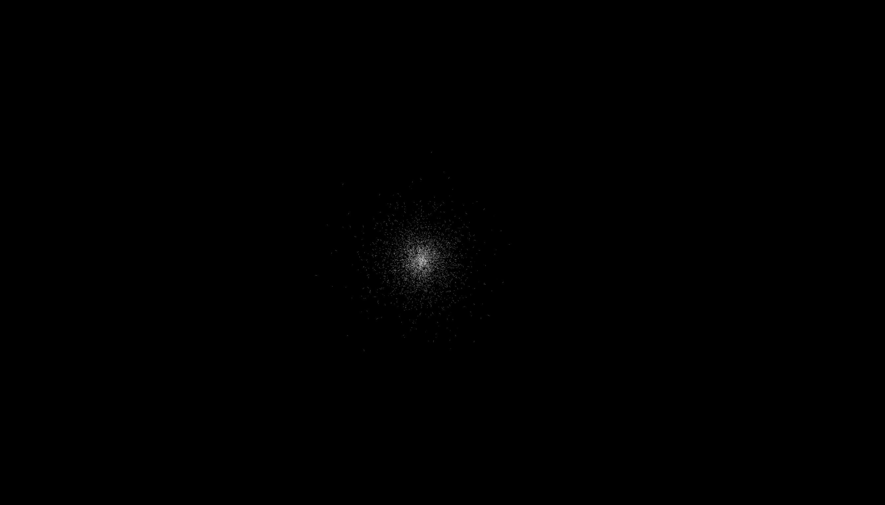
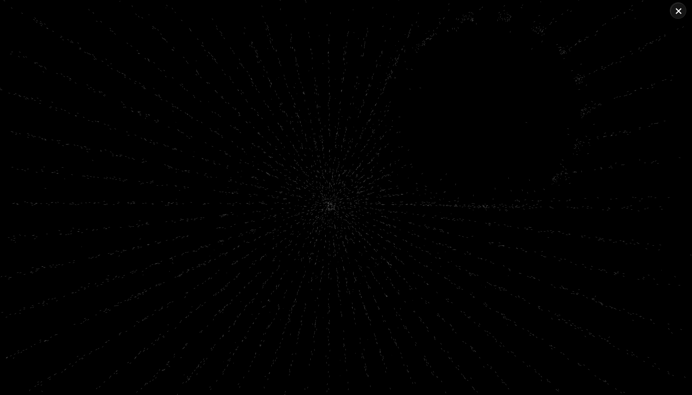
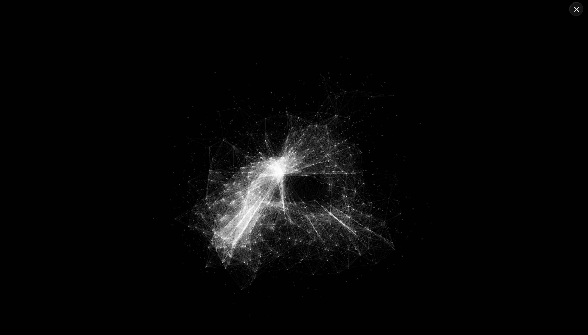

Cet Organisme Abstrait est une forme de vie digitale autonome, une nébuleuse de filaments qui "respire" au centre de l'écran. Ce projet explore la frontière entre la rigueur mathématique et le désordre organique à travers un phénomène de "Glitch Math" : une erreur volontaire de conversion trigonométrique qui transforme des trajectoires froides en une danse nerveuse et vibrante.
L'entité n'est pas un simple décor ; elle réagit à votre présence. La souris devient un corps étranger que l'organisme évite pour protéger son noyau, créant un dialogue tactile entre l'utilisateur et la matière numérique. C'est une métaphore de la résilience : une forme qui peut être perturbée et creusée, mais qui tend toujours à retrouver son équilibre et sa cohésion originelle.


